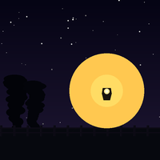
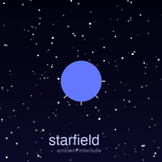

written at 3am watching porch light stripes on the ceiling. about waiting for someone already gone. nine snares in the second verse. Cm-Ab-Eb-Bb. 凌晨三点看着门廊的光影写的。等一个已经走了的人。第二段军鼓改了九遍。Cm-Ab-Eb-Bb。

an ambient interlude. layered pads, vinyl crackle, star twinkles. the sound between songs. 一段氛围过场。层叠的垫底音、黑胶底噪、星星闪烁的声音。歌曲之间的空隙。
▼ download▼ 下载